Medical Bloom减重
减重项目
无需担心副作用！ 实现健康、稳定减重的高端韩方减肥解决方案

时下流行的“减肥药”，
引发多种身体副作用……
号称有效的肥胖治疗药物， 滥用隐忧正成为现实……
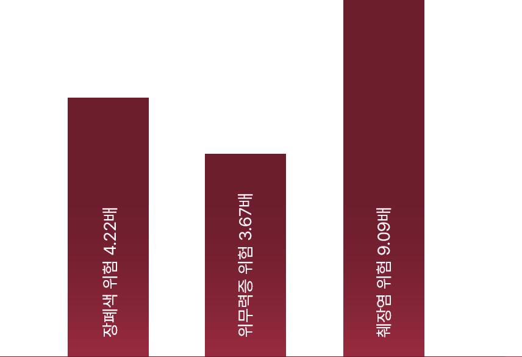
减肥药物成分的副作用
“近期大热的肥胖治疗药W……效果与副作用如何？”，HiDoc，健康医学记者李珍京，2024.10.22
要想成功减重，
健康、
有益于身体、 系统化的 减重方式必不可少。
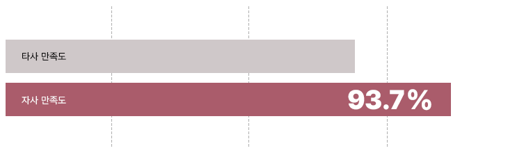
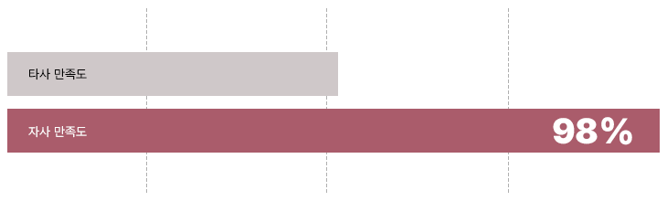
减量秘策可以做到。
众多好评与满意度见证的减量秘策效果 减重成功率 开始减量秘策后1个月内完成体重/服药记录的患者中， 标准减重（6%）达成率（2024.09） 项目满意度 体验过减量秘策的顾客 项目满意度平均值（2024.09） 推荐意愿 体验过减量秘策的顾客 “推荐意愿”回答平均值（2024.10）

您的健康减重之旅，
为什么必须选择减量秘策
Medical Bloom减重的核心在于 快速提升基础新陈代谢功能、增加卡路里消耗， 并将日常活动的主要能量来源转变为脂肪的体质改善。
打造以肥胖的核心根源——脂肪为主要能量来源的体质， 帮助您在减重结束后依然保持体重与身材线条。
分解体脂肪 饱腹感 抑制食欲 排出毒素 改善体质 改善慢性炎症
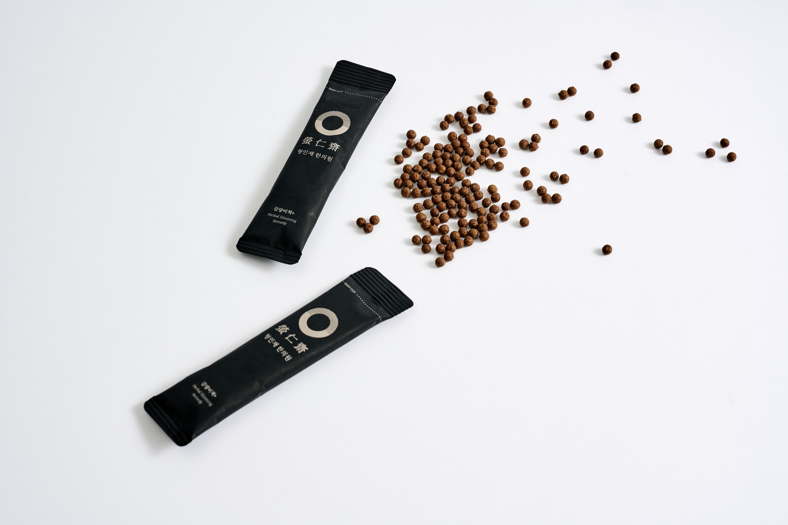
传统减肥
Medical Bloom减重
断食、节食 必须正常用餐 不考虑体质 可根据体质定制、调补药材 千篇一律的处方过度兴奋交感神经，加速大脑与心脏老化 循序渐进改善体质，同时保持自律神经系统平衡 营养失衡 院长根据体质提供饮食指导 瘦得快，反弹也随之而来 通过将体质改善为以脂肪为主要能量来源，最大限度减少反弹
需要节食与运动并行 无需强制运动的减重 仅仅是数字上的减重 改善慢性炎症 改善胰岛素抵抗 改善脂肪代谢 肝脏解毒作用（排毒期） 对代谢综合征及子宫、月经系统的治疗效果
减量秘策
推荐给这样的您。
喝水都会胖
一减肥就反弹
我需要适合自己身体的健康减重
减重固然好，但我更想给身体来一次彻底排毒
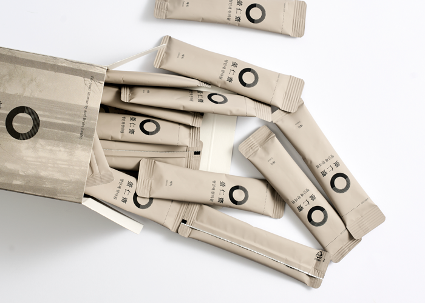
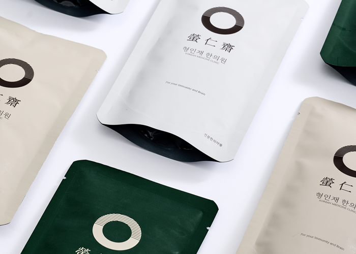
为了轻盈洁净的身体，
减量秘策排毒
顺畅排出体内堆积的代谢废物， 并使减重效果最大化的 一周见效的排毒秘策——减量秘策排毒丸 您健康减重的秘密 减量秘策系列 必须好好吃饭的健康减重？
由1:1定制调配的丸药与汤药组成， 根据您的体质、状态与减重目标，共备有3种方案的减量秘策系列 专为运动也无法解决的部位打造的 身体线条Contactor 以槐树叶、桑叶等为主要原料， 激活治疗部位脂肪细胞新陈代谢的 Medical Bloom特有的瘦身肌肤营养针
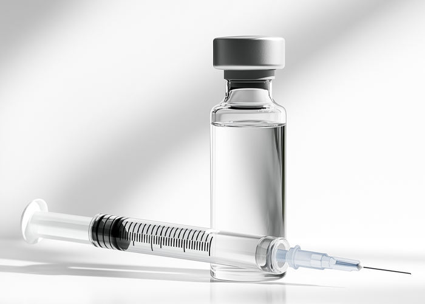
Q. 长期服用一年以上，
会不会成瘾或产生副作用？
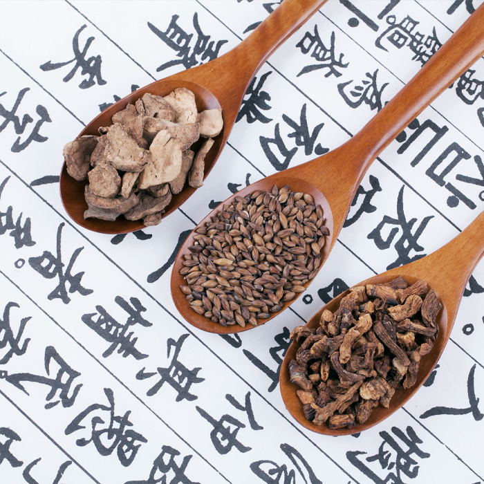
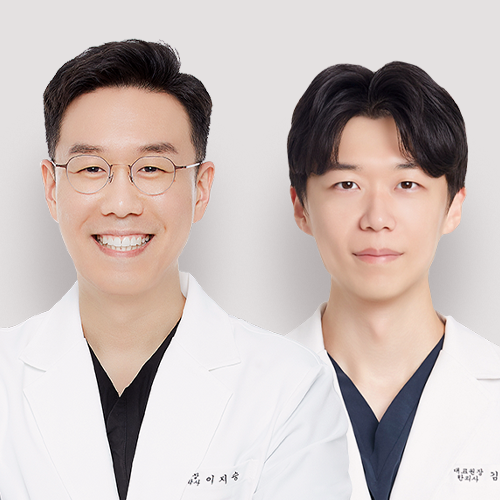
减量秘策的代表药材
麻黄
含有麻黄碱这一活性成分，可提高代谢量。
麻黄碱刺激交感神经系统，提高心率与体温， 从而增加体内能量消耗。
也就是说，通过提高基础代谢率，使身体消耗更多体脂肪。
薏苡仁 通过抗炎作用减少炎症、增强免疫系统， 并通过利尿作用帮助排出体内废物、缓解水肿。
还能改善消化功能、缓解消化不良， 对体重管理也有帮助。
熟地黄 改善血液循环，缓解贫血与眩晕， 增强身体免疫力，有助于预防感染。
还能保护并改善肝功能，促进解毒作用。
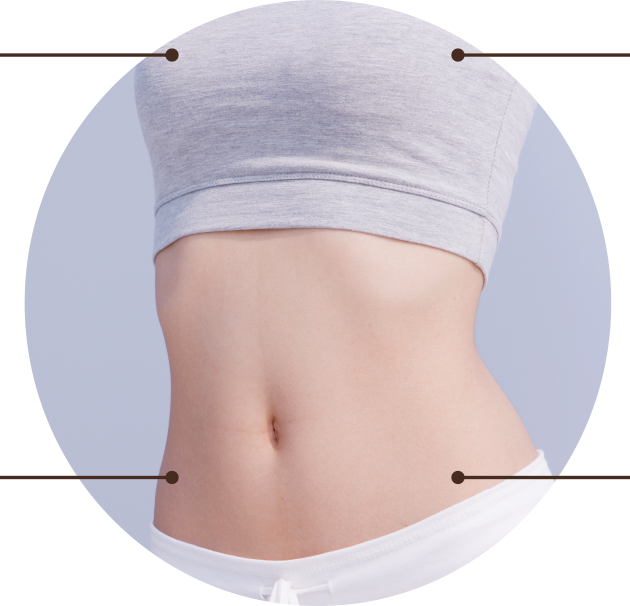
减量秘策的功效
一目了然
减肥的根本目的—— 减轻体重 连细微的健康问题也一并调理 减少炎症与水肿 虚弱、干瘦的身体？
提升免疫力 由内而外干净清爽、毫无赘余， 排出代谢废物
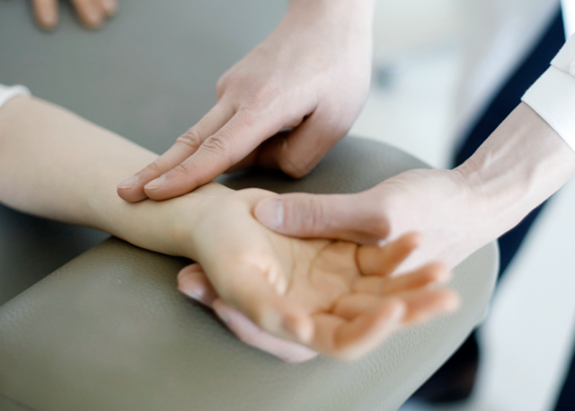
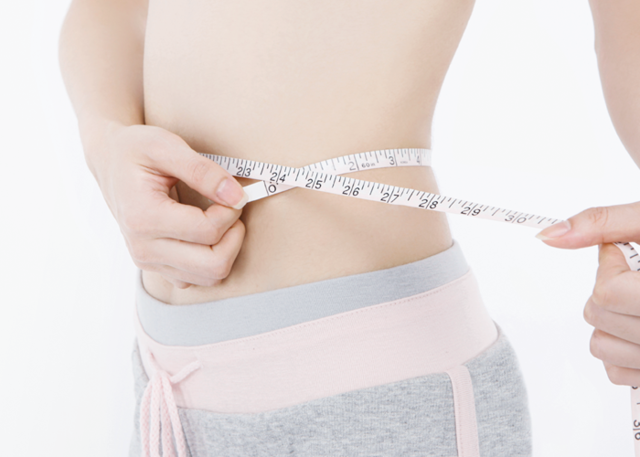
Medical Bloom
陪伴您直到减重的最后一刻。
系统化的Medical Bloom减量秘策项目流程 通过各项检查与问卷 进行系统分析 按体质 定制减重方案 1:1量身定制 韩药方案处方 饮食指导及 生活习惯指导
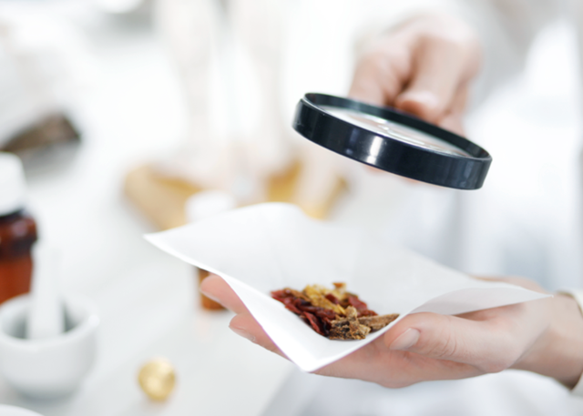
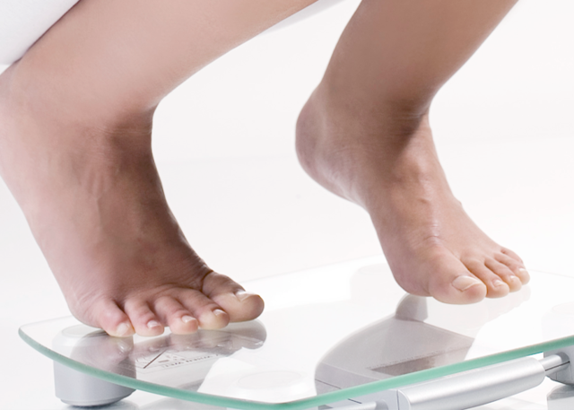
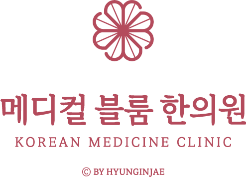
如果还有顾虑，
欢迎与院长直接面谈！
为您呈现最健康的美丽——
Medical Bloom 韩医院的承诺
1:1肌肤状态与设计咨询
通过与院长的充分沟通，细致检查您的问题部位、肌肤状态与肤质特点。 综合考虑您所追求的美丽与面部状态，为您提出最合适的个人定制面部设计方案。
两位韩医院长的
特别专属管理
从咨询到治疗，我们把您的肌肤当作家人挚友的肌肤，以无微不至的细心与专注悉心呵护。 将韩医学视角融入肌肤美容，辅以血脉与肌肉的刺激，健康与美丽兼得。
无副作用的健康之美
我们把您的肌肤健康与满意度放在首位。 为了杜绝治疗后令人痛心的副作用，我们在检查与咨询环节力求万全，药针与韩药原料坚持只选用温和亲肤的天然韩药材。
正品高端仪器与
足量规范治疗
Medical Bloom 为顾客使用的所有仪器与药品均为正品，并按照您面部所需的定制剂量精准施治，不多也不少。